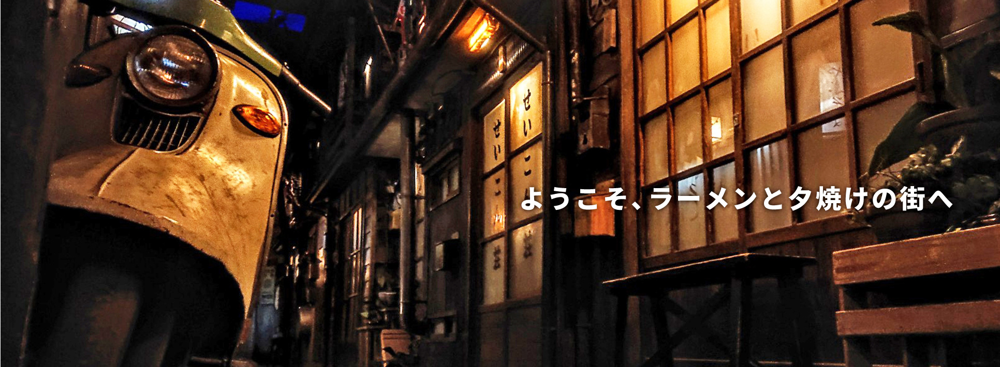
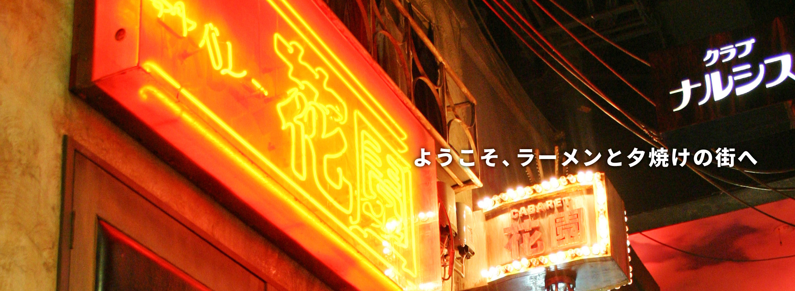
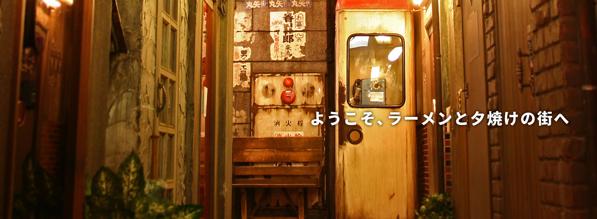
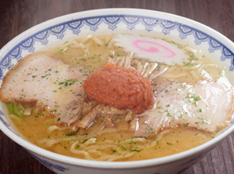
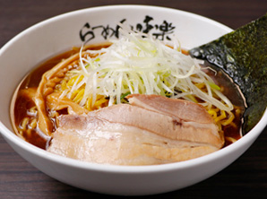
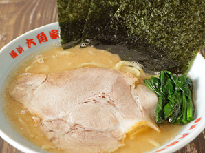
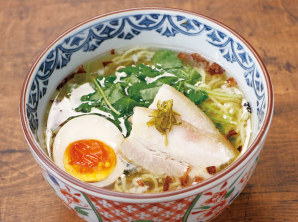
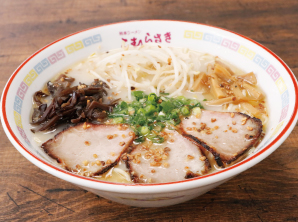
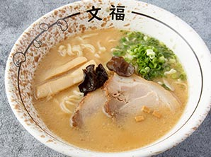
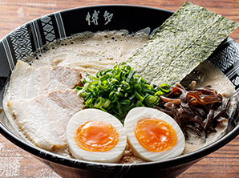

- 
- 
- 
PICK UP
 RAMEN LINE UP!
RAMEN LINE UP!
-


山形「龍上海本店」
太縮れ味噌
昭和35年誕生の味 元祖"からみそラーメン"。
創業から、はや半世紀。今なお地元から愛され続ける銘店。 -

北海道・利尻島「利尻らーめん味楽」
太縮れ醤油
日本三大昆布「利尻昆布」をふんだんに使った「焼き醤油ラーメン」は旨味が凝縮した極上の一杯です。
-

六角家1994＋
太ストレートとんこつ醤油
あの"家系御三家"六角家がラー博に復活!
-
東京「淺草 來々軒」
中ストレート醤油
明治43年創業。日本初のラーメンブームを起こした「淺草 來々軒」がラーメン博物館に復活。 新横浜ラーメン博物館が調査・裹付けを行い、支那そばやが再現・運営をし、來々軒の末裔が承認するという3者で取り組むプロジェクトです。
-

沖縄「琉球新麺 通堂」
細ストレート塩
沖縄の食材を活かしたあっさりしながらもコクのある塩ラーメン。スープを最後まで飲み干したくなる優しい味わいです。
-

熊本「こむらさき」
細ストレートとんこつ
ラーメンに焙煎ニンニクを初めて入れたお店。一番人気は多彩な具材の「王様ラーメン」。
-

ラーメン登龍門2024 優勝「博多文福」
ミックス（太・細）味噌
太麺と細麺を同時に味わう"ミックス麺"
-

博多一双
細ストレートとんこつ
博多ラーメンに旋風を巻き起こす"豚骨カプチーノ"

FOLLOW US!


 ACCESS
ACCESS
新横浜ラーメン博物館
〒222-0033 横浜市港北区新横浜2-14-21
TEL. 045-471-0503
営業時間
平日 11:00～21:00 / 休日 10:30～21:00
※ラストオーダーは閉館時間の30分前となります。
※営業時間短縮要請期間や感染防止対策期間は変更する場合がございます。
休館日
年末年始（12月31日・1月1日）
※地震などの不測の事態により、予告なく休館する場合がございますのでご了承ください。
電車でのお越しの方
ＪＲ新横浜駅（横浜線、東海道新幹線）より徒歩5分
相鉄・東急新横浜線、横浜市営地下鉄 新横浜駅10番出口より徒歩1分
お車でのお越しの方
環状2号線方面よりJR新横浜駅前の交差点（新横浜駅入口）を荏田・第三京浜方面へ曲がり、さらに二つ目の信号（新横浜二丁目北側）左折。 一つ目の角（コンビニあり）を右折。（駅前より約１分）
駐車場は「新横浜ラーメン博物館」のパーキングをご利用ください。
新横浜ラーメン博物館右横に車の出入り口があります。